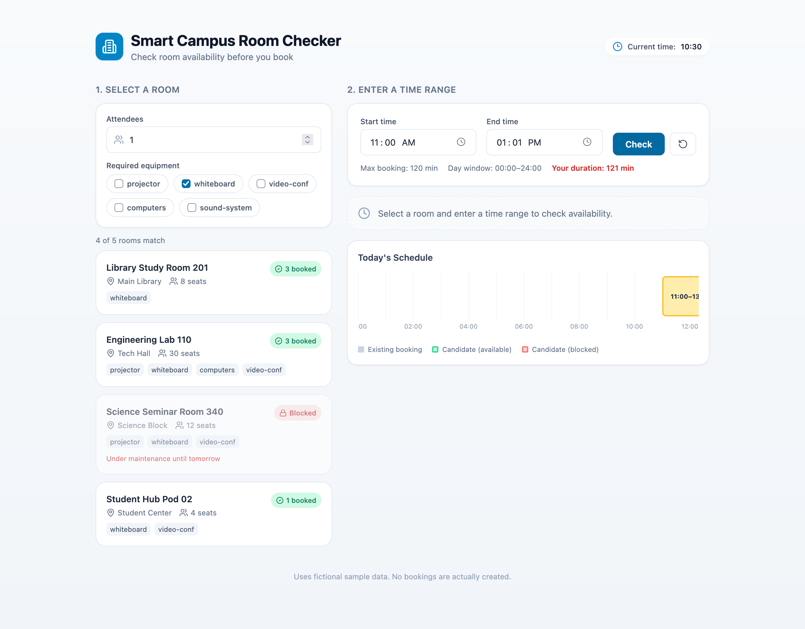
T2_7 — ticking "whiteboard" hides the selected Arts 05; selection and result cleared.

S6 — after the R1 fix: switching to the blocked room no longer shows the old verdict (compare S5).
| Field | Value |
|---|---|
| Student | Kerimzhanov Rassul (24B031844) |
| Date of AI work | 4 November 2026 |
| AI assistant | Claude Code (CLI agent), model Claude Opus 5.5, working inside the local repository |
| Stack | React 18 + TypeScript + Vite 5 + Tailwind; tests: Vitest 1.6.1, React Testing Library 16, jsdom 24 |
| Environment | macOS, Node.js 26.10.0, npm 11.19.1 |
| Initial version | initial/ — Git commit 905d50f (A3 Python core + Bolt export from Practice 06/07) |
| Final version | app/ — Git commits a5c7cc5 … d508845 (feature, refactoring, tests); docs after that |
| Companion files | README.md (setup/run/test), AI_Evidence PDF, evidence/ (raw outputs and screenshots) |
The starting code is my previous Smart Campus prototype. The latest Bolt export (Practice 06/07) is newer than the version described in my A3 report: it already had four fictional rooms with their own bookings, a pure checkAvailability function and two Vitest files. It had no equipment, no capacity filter and no attendees input. The Python booking.py from A3 contains the same AC1–AC4 rules a second time.
Baseline (before any change): cd initial/bolt/project && npx vitest run → 34 passed (34); typecheck and build pass (evidence/01_baseline_vitest.txt, screenshot S1).
One prompt (E9) with: a repository map (every source file and its role), AC1–AC6, the new requirements F1–F5, the constraints (no login, payments, APIs or DB; fictional data; fixed now), the observed defect from screenshot S4, and an explicit instruction "analysis only, do not write code".
| # | Risk | Evidence (file / function) | Priority |
|---|---|---|---|
| R1 | Stale result: UI state not derived from inputs (breaks F5, F3, AC6) | App.tsx:18 keeps result in state; only handleCheck (App.tsx:30) sets it; setRoomId, setStartTime, setEndTime never clear it. Reproduced: S4 (11:00–12:11 overlaps 12:00–14:00 but shows "Available"), S5 (blocked room shows "Available"). | High |
| R2 | Same rule computed in several places | Duration/120-min rule in availability.ts:28, App.tsx:28, App.tsx:117, ResultBanner.tsx:29. Whole rule set duplicated in initial/booking.py: can_book with a different check order (blocked first, booking.py:22, vs after duration in availability.ts:35). | High |
| R3 | Room model cannot express new requirements; filtering has no home | types.ts: Room has no equipment; App.tsx:72 renders SAMPLE_ROOMS directly; RoomCard gets disabled={false} hard-coded (App.tsx:77); App.tsx already mixes data, state, validation and layout. | High |
| R4 | Duplicated tests | availability.ai.test.ts repeats most cases of availability.test.ts; T01 appears twice in the same file (lines 31 and 92). | Medium |
| R5 | Small defects | availability.ts:23 formats "now" via formatRange(t,t).split(' – ')[0]; Timeline.tsx:110 legend says "Candidate (blocked)" for any unavailable result; unused @supabase/supabase-js contradicts the no-DB constraint. | Low |
equipment to Room; at least four rooms with varied capacity/equipment, one blocked.filterRooms module for F1–F3 with unit tests (capacity 8 vs 9).For item 2 the AI proposed deriving the result live from the inputs and dropping the Check button. I changed this: the Check button stays and the result is simply cleared whenever the room, time or filters change. It is a smaller change, keeps the original UX, and follows "one change at a time". I also accepted item 6 only partially: booking.py is not deleted, it stays as a legacy reference outside the runtime.
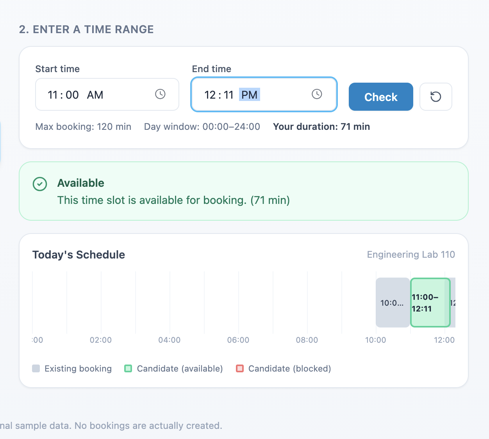
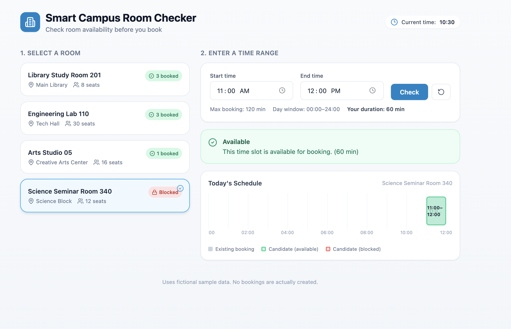
Implemented in four small steps (E10–E12 plus one fix), each followed by a full test run and a commit:
data.ts): five fictional rooms, each with id, name, capacity, equipment list, blocked status and its own bookings. sci-340 is blocked; capacities 4, 8, 12, 16, 30.lib/filtering.ts): F1 capacity >= attendees; F2 room has all selected items (every); F3 a blocked room that matches stays visible but is selectable: false; F4 empty state when no selectable room matches.min-width: auto. Fix: min-w-0 on both sections. The defect existed in the initial version too (measured).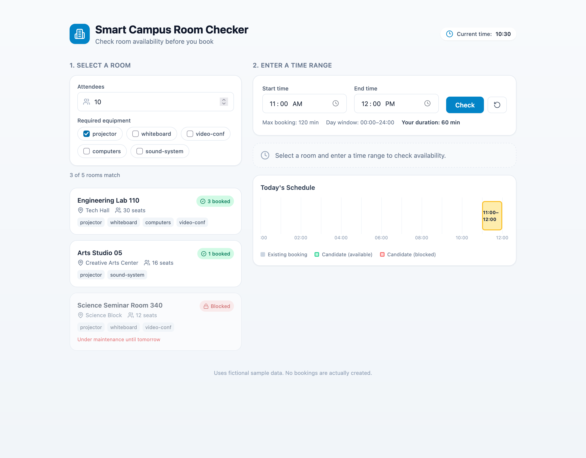
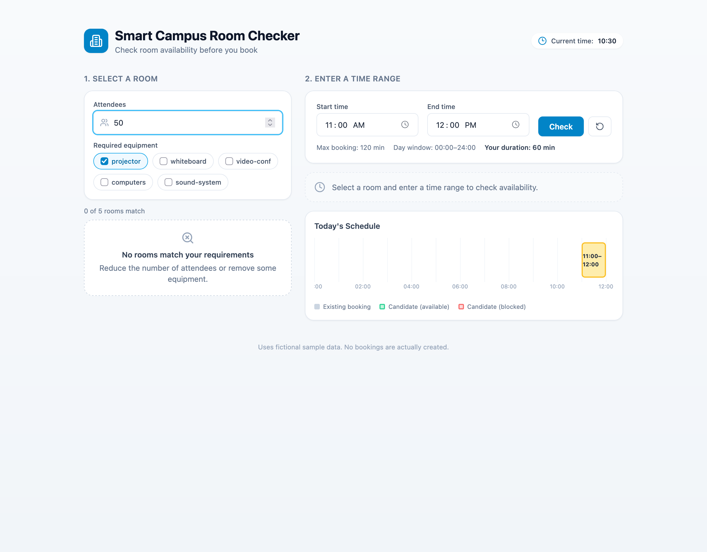
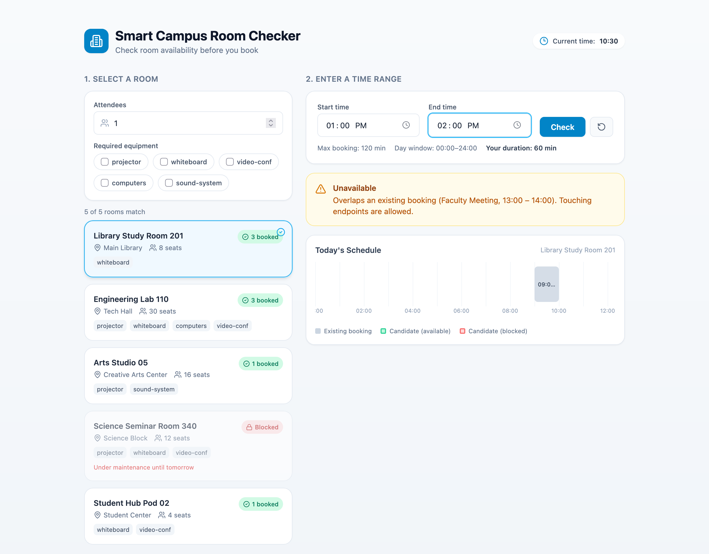
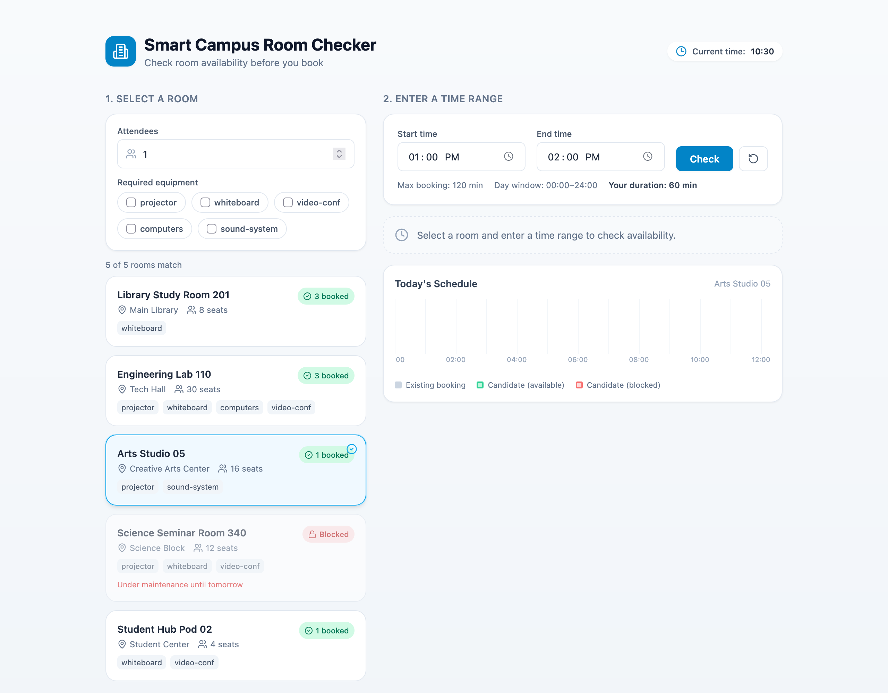
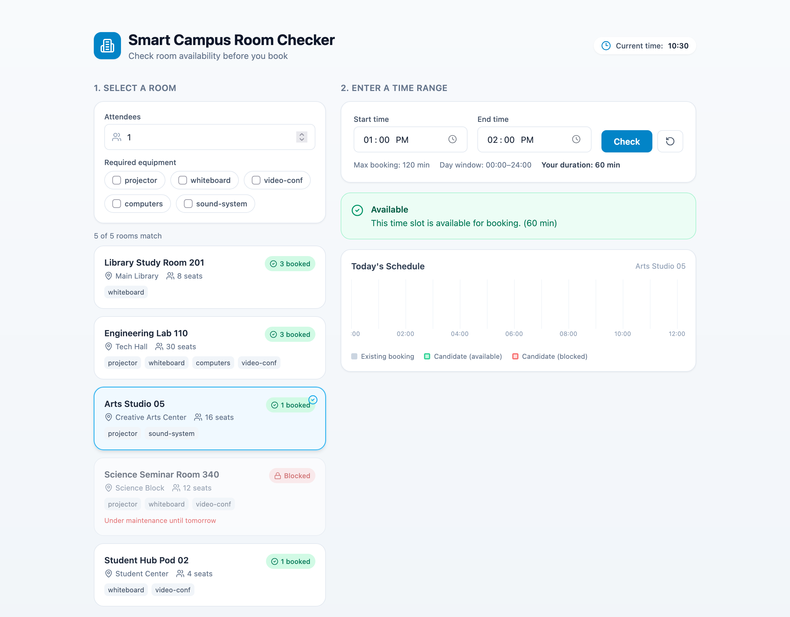
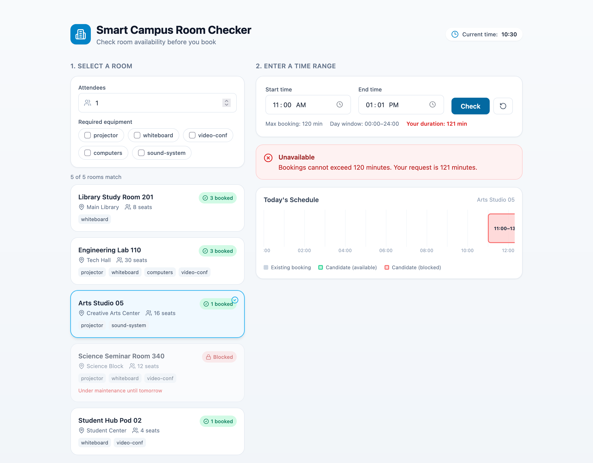

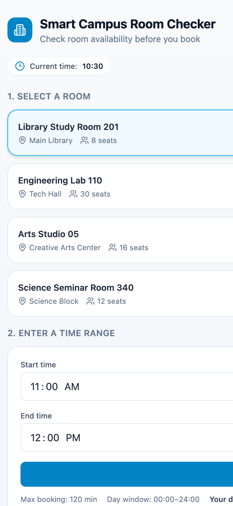
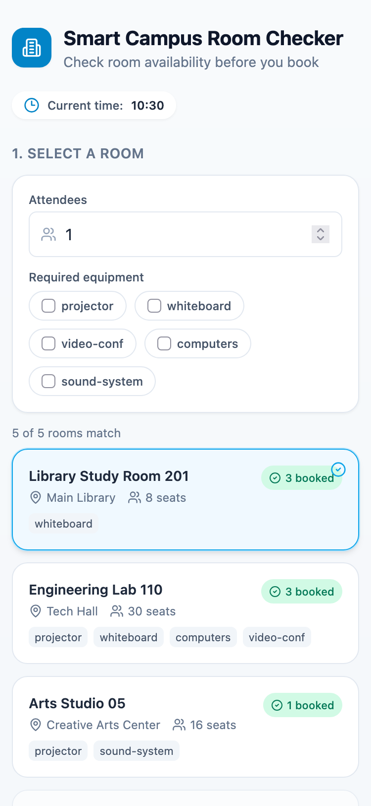
+--------------------------------------------------------------+
| App.tsx (data + state + validation + layout) |
| - renders SAMPLE_ROOMS directly, no filtering |
| - own duration math (endMin - startMin) |
| - own 120-min check (duration > MAX_BOOKING_MINUTES) |
| - result kept in state, never cleared (stale) |
+------+---------------+----------------+-------------+--------+
| | | |
v v v v
data.ts lib/availability.ts lib/time.ts components/
4 rooms, AC1-AC4 + own HH:MM utils RoomCard (disabled=false)
no equipment duration + 120 check, ResultBanner (own duration prop)
split() hack for now Timeline ("Candidate (blocked)")
initial/booking.py can_book(...) -> 2nd copy of AC1-AC4, different check order
package.json: @supabase/supabase-js (unused) tests: 2 files, mostly duplicate cases
+----------------------- UI presentation (App.tsx, components/) ----------------------+
| App.tsx: wires state to pure functions; clears result on room/time/filter change |
| RoomFilters EmptyState RoomCard(selectable) ResultBanner(result.duration) |
| TimeInput Timeline("Candidate (unavailable)") |
+------------+------------------------------+------------------------------+----------+
| | |
v v v
+------------------------+ +------------------------------+ +---------------------+
| Filtering | | Booking / availability rules | | Room data |
| lib/filtering.ts | | lib/availability.ts | | data.ts, types.ts |
| filterRooms (F1-F3) | | checkAvailability (AC1-AC4) | | 5 rooms, equipment |
| hasSelectableRoom (F4) | | exceedsMaxDuration (AC2) | | EQUIPMENT_OPTIONS |
| parseAttendees | | | | |
+-----------+------------+ +--------------+---------------+ +---------------------+
+-------------------+-----------+
v
+------------------------+
| lib/time.ts |
| durationOf (only |
| duration formula) |
+------------------------+
initial/booking.py: legacy reference only, not used by the app
Dependency direction: UI → filtering / rules → time utilities; data is read-only input. Nothing below the UI imports React, so all of it is pure and unit-tested.
| Before | After |
|---|---|
App.tsx:60 own formula endMin - startMin | durationOf() in time.ts (also used inside checkAvailability) |
App.tsx:188 own duration > MAX_BOOKING_MINUTES | exceedsMaxDuration() in availability.ts |
ResultBanner.tsx:29 duration from a separately computed prop | result.duration — the duration the decision was made for |
Also: split() hack → minutesToHHMM; legend → "Candidate (unavailable)"; @supabase/supabase-js removed. Behaviour unchanged: 47/47 tests before and after the refactoring with no test expectation edited.
durationOf is the only duration formula and exceedsMaxDuration the only 120-minute decision; the UI label and the rule engine both call them, and the banner shows result.duration. A rule change is now a one-line edit, and the banner can no longer disagree with the verdict.{ room, selectable } instead of hiding blocked rooms. F3 is explicit and visible (the user sees why a room cannot be booked), F4 is defined as "no selectable room", and F1–F4 are testable without rendering React.App.tsx computes the room from the current filter result and selected id, and every input change clears the stored result, so a result always belongs to the current inputs (fixes R1/F5).booking.py kept as legacy reference only: the web app has a single TypeScript rule set; the Python copy is out of the runtime path and listed as a limitation.| Command | Result | Evidence |
|---|---|---|
cd initial/bolt/project && npx vitest run | 34 passed (34) — baseline | 01_baseline_vitest.txt, S1 |
cd app && npx vitest run --reporter=verbose | 40 passed (40), 4 files | 08_E14_final_tests.txt, E14_check_tests.png (my own run) |
original 34 tests copied from initial/, run on final code | 34 passed (34) | 10_E14_original_tests_on_final.txt |
mutation M1: F1 >= → > | 2 failed | 38 passed — detected | 09_E14_mutation_check.txt |
| mutation M2: room switch no longer clears result | 1 failed (UI test) | 39 passed — detected | 09_E14_mutation_check.txt |
npm run typecheck, npm run lint, npm run build | no errors; build OK | 08_E14_final_tests.txt |
| File | Tests | Content |
|---|---|---|
src/lib/availability.test.ts | 24 | AC1–AC5 regression + durationOf, exceedsMaxDuration |
src/lib/filtering.test.ts | 11 | F1–F4, immutability, catalog shape |
src/lib/roomSelection.test.ts | 2 | F5: same interval, different rooms, different results |
src/App.test.tsx | 3 | UI/integration (React Testing Library, jsdom) |
| Requirement | Tests |
|---|---|
| AC1 valid time | T02 start = now → rejected; C2 now+1 → OK; T03 zero length; T04 reversed; T05 end 1441; A3-1 end = 1440 → OK; A3-2 negative start |
| AC2 120 vs 121 min | T06 720–840 (120) → OK; T07 720–841 (121) → rejected; exceedsMaxDuration(120/121) |
| AC3 blocked | T13, T13b (with reason text) |
| AC4 touching vs overlapping | T01, T08 touching → OK; T09–T12 partial/contains/inside/identical → rejected; C1 between two bookings; C3 second booking only |
| AC5 no mutation | repeated checks leave room deep-equal; frozen bookings do not throw |
| F1 exact vs insufficient capacity | capacity 8 / 8 attendees → included; 8 / 9 → excluded |
| F2 all equipment | superset matches; partial match excluded; empty selection matches all |
| F3 blocked never available | selectable: false; only-blocked match → no selectable room; UI: blocked card disabled |
| F4 empty state | no capacity → []; impossible equipment combination → []; UI: "No rooms match your requirements" |
| F5 room switch | lib-201 vs arts-05 for 13:00–14:00; UI: result clears on switch, Check uses new room; filter hiding selected room clears it |
UI/integration test (App.test.tsx): renders the real App with the real catalog, sets 10 attendees + projector ("3 of 5", Library hidden, Science disabled), selects Engineering 110, 13:00–14:00 → Unavailable (Robotics Workshop), switches to Arts 05 → result cleared, Check → Available (60 min).
Consolidation: availability.ai.test.ts (15 tests) was merged: 14 exact duplicates removed, 1 distinct case kept as T13b (list in evidence/E14_test_consolidation.md). This is why the total is 40, not 47.
| Measure | Original | Final | How it was obtained |
|---|---|---|---|
| Automated tests passed / total | 34 / 34 | 40 / 40 | npx vitest run in each version (evidence/01, 08); also original 34 / 34 on final code (evidence/10) |
| Tests for F1–F5 / UI tests | 0 / 0 | 16 / 3 | Count of tests in filtering (11), roomSelection (2) and App.test.tsx (3) from the verbose run |
| Regressions detected by mutation | not measured | 2 of 2 | Two deliberate code mutations, full run after each (evidence/09) |
| Duplicated logic locations in app code | duration formula ×2, 120-min check ×2, independent duration display ×1 | ×1, ×1, ×0 — 3 locations removed | grep -rnF over app/src excluding tests, before/after (evidence/05, 06) |
| Duplicate test cases | 14 | 0 | Case-by-case comparison of inputs and fixtures (E14_test_consolidation.md) |
| Rule implementations across languages | 2 (TS + Python) | 2 (Python out of runtime) | File inspection; booking.py not imported by the app — remaining limitation |
| Unused dependencies | 1 (@supabase/supabase-js) | 0 | grep supabase package.json and source |
| Page width at 375 px viewport (AC6) | 1102 px (overflow) | 375 px | document.documentElement.scrollWidth vs innerWidth in Firefox (S8, T2_8) |
| Stale result after room/time change | present (S4, S5) | fixed (S6, UI test) | Manual reproduction + App.test.tsx |
| Source modules (non-test) | 9 files, 840 lines | 12 files, 1093 lines | wc -l over src (lines grew because of new features) |
| Module | Responsibility (final) |
|---|---|
data.ts, types.ts | Fictional catalog (5 rooms, equipment options) and types |
lib/availability.ts | Booking rules AC1–AC4, the only 120-minute decision; returns verdict, reason, conflict, duration |
lib/filtering.ts | F1–F4: capacity, equipment, selectable flag, attendee parsing |
lib/time.ts | Time conversion, the only duration formula |
App.tsx | State and wiring; clears results on input changes |
components/* | Presentation only: filters, empty state, room card, result banner, time input, timeline |
App.tsx still holds all UI state and grew from 149 to 220 lines; a custom hook would separate state from layout.booking.py still contains a second copy of the rules (out of runtime, kept for comparison).I worked with Claude Code (Opus 5.5) in the repository. In the first prompt I gave it a file map, the criteria AC1–AC6 and F1–F5, the constraints (no login, database or APIs) and screenshot S4 showing a stale result. I asked for analysis and a plan only, then sent every change as a separate prompt.
The analysis was the most useful part: the AI found five risks with line references, including the stale result after switching rooms and the duration computed in three places. While checking the page at 375 px it noticed horizontal scrolling that already existed in the initial version and that I never verified in A3. I did not accept everything. The AI suggested computing the result live without the Check button; I kept the button and only clear the result, because that is a smaller change. Once a screenshot showed two highlighted room cards. It was a CSS transition, and the AI confirmed this from the DOM, otherwise it would have looked like a bug.
I personally checked the filters, the empty state and the selection reset in the browser, ran the tests in my terminal, confirmed from the diff that old test expectations did not change, and read >= for capacity and every for equipment.
Tests drove my decisions. I ran the 34 original tests on the final code as a safety net for refactoring. A mutation check showed that the tests catch replacing >= with > and removing the result reset. I removed duplicate tests: 40 instead of 47, with no distinct case lost.
Next I would move the state out of App.tsx into a custom hook, add an end-to-end test in a real browser and remove the Python copy of the rules.
(289 words, counted with wc -w.)